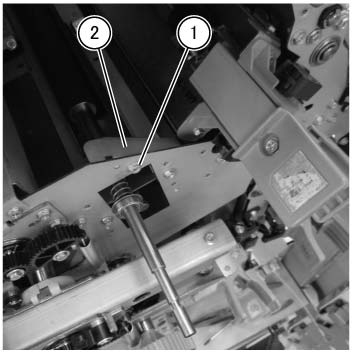
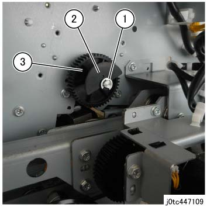
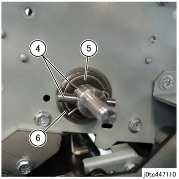
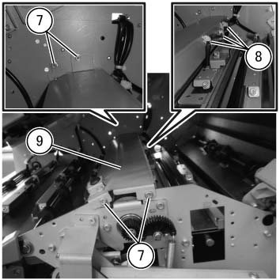
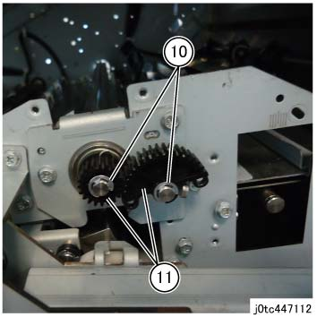
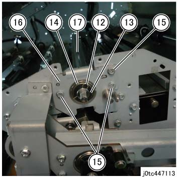
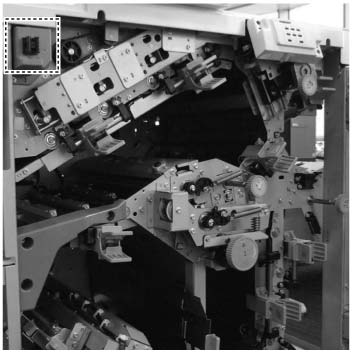
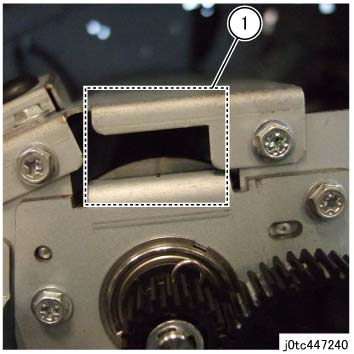
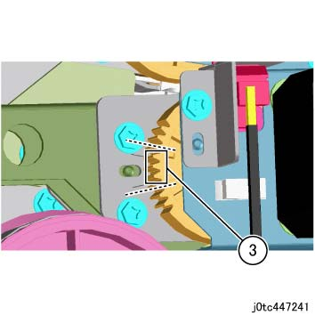

REP 47.15.1 上方 Blade 组件 
参考 PL:PL 47.15
Removal

执行IOT关机步骤. 确认电源已关闭并拔掉电源插头.
拆卸 Trans Regi. 辊. (REP 47.11.3)
拆卸 Support 支架. (图 1)
拆卸螺钉.
拆卸 Support 支架.

(图 1) tcw447042
拆卸 上方 折痕器 移动 电机组件. (PL 47.16)
拆卸 上方 Blade 组件.
拆卸E型卡环. (图 2)
拆卸 执行器 位置. (图 2)
拆卸齿轮. (图 2)

(图 2) tc447109
拆卸轴 和 卡扣. (图 3)
拆卸 Nylon 垫圈. (图 3)
拆卸轴承. (图 3)

(图 3) tc447110
拆卸螺钉（x4）. (图 4)
释放 卡箍 (x3) 和 拆卸线束. (图 4)
拆卸 Tie Bar 组件. (图 4)

(图 4) tcw447043
拆卸E型卡环 (x2). (图 5)
拆卸齿轮 (x2). (图 5)

(图 5) tc447112
拆卸卡扣. (图 6)
拆卸 Nylon 垫圈. (图 6)
拆卸轴承. (图 6)
拆卸螺钉（x3）. (图 6)
拆卸轴承 板. (图 6)
拆卸 上方 Blade 组件. (图 6)

(图 6) tc447113
安装
如果 Regi. 板 已 removed, Regi. 调整 必须 已执行 用于 折痕器.
用于 the 调整 步骤, 请参阅 the Trans Regi. 辊 (REP 47.11.3) 安装步骤.
如果 Bearing 板 已 removed, 检查 位置 的 上方 Blade 组件 在...之后 initialization 操作.
打开前盖板. (PL 47.1)
Cheat the 上方 互锁 和 打开电源. (图 7)

(图 7) tcw447044
检查 位置 的 上方 Blade 组件.
确认 the marking 在...上 上方 Blade 组件 与...对齐 the marking 在...上 Regi. 板. (图 8)

(图 8) tc447240
检查 位置 of 齿轮 在后面 (齿轮 相邻于 the 后面 Arm 组件).
确认 the 3 teeth at the instruction 章节 of 齿轮 是 further 内部 比 the notch 的 纸张 metal. (图 9)

(图 9) tc447241
如果 位置 的 上方 Blade 组件 is misaligned, 输入 以下 values 进入 the NVM.
Chain 链接: 506-085
移动 向左 当...时 the 调整 值 is increased
移动 向右 当...时 the 调整 值 is lowered
0.15 mm/Adjustment 值 1
如果 位置 of 齿轮 在后面 (齿轮 相邻于 the 后面 Arm 组件) is misaligned, 输入 以下 values 进入 the NVM.
Chain 链接: 506-087
下降 当...时 the 调整 值 is increased
上升 当...时 the 调整 值 is lowered
0.13mm/Adjustment 值 1